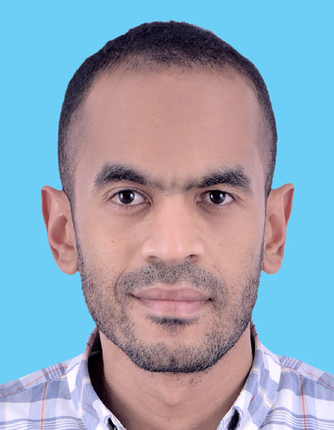

Full Professor
Department of Artificial Intelligence and Human Interfaces
University of Salzburg
Publications - Teaching - Contact - Blog

I am a full professor for machine learning in the Department of Artificial Intelligence and Human Interfaces (AIHI) at the University of Salzburg (PLUS), Austria (and currently deputy head of the department). Prior to that, I was part of the medical imaging and computer vision group at Kitware Inc., North Carolina, USA. My research spans multiple areas, but mostly focusses on theoretical and practical aspects of learning methods that allow to leverage and control structural characteristics of data. I am also a member of the ELLIS society.
September 2024: Neural Persistence Dynamics will be presented at NeurIPS this year! A great collaboration between my group and Stefan Huber’s group at the FH Salzburg; congrats to Sebastian, Florian and Martin! Preprint on arXiv
June 2024: uniGradICON: A Foundation Model for Medical Image Registration will be presented at MICCAI ‘24 - Congrats Lin and Hastings!
June 2024: Neural Persistence Dynamics just dropped; check out the preprint on arXiv; joint work with F. Graf, M. Uray, S. Huber and myself (code to be released soon - stay tuned!)
May 2024: Check out Hastings Greer’s latest preprint on arXiv CARL: A Framework for Equivariant Image Registration with L. Tian, F.-X. Vialard, myself, R.S.J. Estepar and M. Niethammer
March 2024: New preprint on arXiv uniGradICON: A Foundation Model for Medical Image Registration with L. Tian, H. Greer, R. Kwitt, F.-X. Vialard, R. San Jose Estepar, S. Bouix, R. Rushmore and Marc Niethammer - thanks Lin and Hastings for the great work on getting the first foundation model for medical image registration out there!
Feb. 2024: Our position paper Challenges and Opportunities in Topological Deep Learning with a lot of great authors (from various communities) is available on arXiv
September 2023: Latent SDEs on Homogeneous Spaces got accepted at NeurIPS ‘23 - see our preprint on arXiv - congrats Sebastian Zeng and Florian Graf
July 2023: Checkout my group’s latest work on Latent SDEs on Homogeneous Spaces on arXiv - joint work with Sebastian Zeng and Florian Graf
July 2023: Multistep Inverse Consistency by Construction by Hastings Greer, Lin Tian, F.X.-Vialard, myself, Sylvain Bouix, R. Estépar, R. Rushmore and M. Niethammer got accepted at MICCAI ‘23 - checkout the preprint on arXiv
February 2023: GradICON: Approximate Diffeomorphisms via Gradient Inverse Consistency by Hastings Greer, Lin Tian, F.X.-Vialard, myself, R. Estépar, R. Rushmore, N. Makris, S. Bouix and M. Niethammer got accepted at CVPR ‘23
November 2022: Check out our latest preprint GradICON: Approximate Diffeomorphisms via Gradient Inverse Consistency by Hastings Greer, Lin Tian, F.X.-Vialard, myself, R. Estépar, R. Rushmore, N. Makris, S. Bouix and M. Niethammer on arXiv
September 2022: Check out our latest work On Measuring Excess Capacity in Neural Networks on arXiv - a joint effort of Florian Graf, Sebastian Zeng, Bastian Rieck, Marc Niethammer and myself - now accepted at NeurIPS ‘22
August 2022: My group hosted the Biannual Austrian TDA meeting this year, a joint effort by Herbert Edelsbrunner (IST Austria), Michael Kerber (TU Graz) and myself. Great meeting and great talks!
January 2022: As of 01/2022, I will serve as deputy head of the newly founded Department of Artificial Intelligence and Human Interfaces (AIHI) at the University of Salzburg.
September 2021: I gave a talk within the Thematic Mini-Conference on Computational Topology and Machine Learning at the TU Berlin - Slides are available here
September 2021: Sebastian Zeng’s paper Topological Attention for Time Series Forecasting has been accepted at NeurIPS ‘21 - joint work with F. Graf, C. Hofer and myself
July 2021: Hastings Greer’s paper ICON: Learning Regular Maps Through Inverse Consistency has been accepted at ICCV ‘21 - joint work with Marc Niethammer, F.-X. Vialard and myself
July 2021: Chris has left our group to work in industry - Thanks for all the great work over the years!
May 2021: One paper accepted (as long presentation) at ICML ‘21 (congrats Chris and Florian)
February 2021: Our new preprint Dissecting Supervised Contrastive Learning (joint work with F. Graf, C. Hofer and M. Niethammer) is available at here
September 2020: One paper (joint work with S. Wei, F.-X. Vialard and M. Niethammer) accepted (as oral) for NeurIPS ‘20
August 2020: We will be organizing a NeurIPS ‘20 workshop on Topological Data Analysis and Beyond (with B. Rieck, F. Chazal, S. Krishnaswamy, K.N. Ramamurthy, Y. Umeda and G. Wolf)
June 2020: Two papers accepted at ICML ‘20 (congrats Chris and Florian)
For a complete list of all papers, go to Publications, or visit my Google Scholar profile.
I regularly serve as a reviewer for the major vision and machine learning conferences (e.g., CVPR, ICCV, ECCV, BMVC, NIPS, AISTATS, ICIP, ICPR, MICCAI, ICLR) as well as the major journals in the field (e.g.,TPAMI, JMLR, IJCV, TMI, TIP, TSP, MedIA).